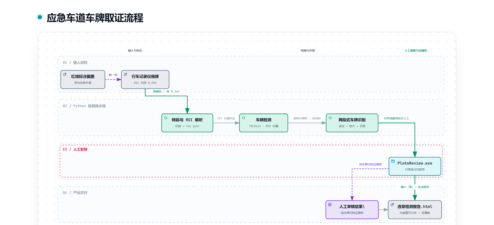
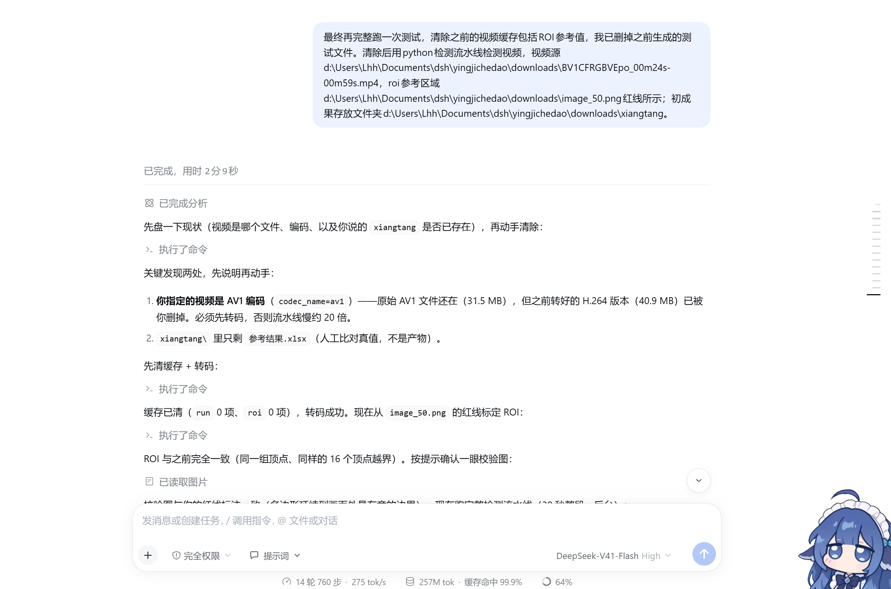
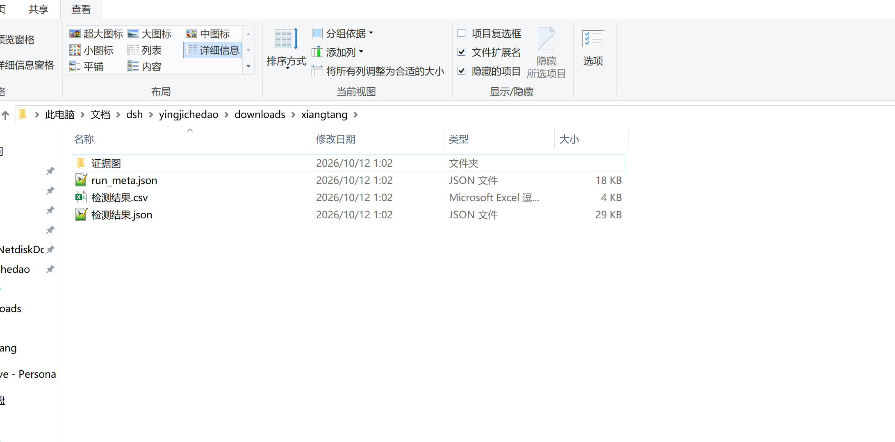
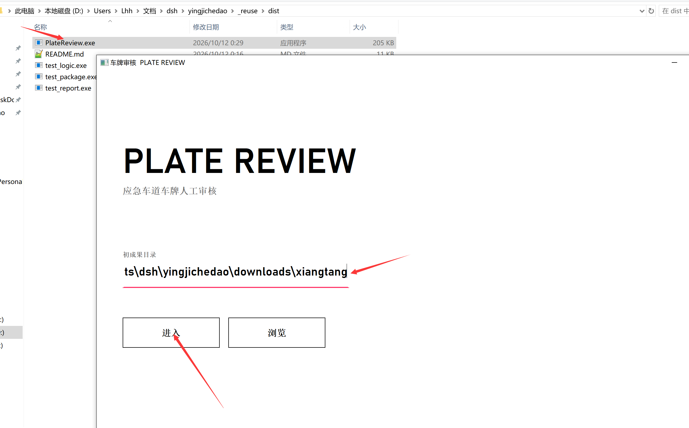
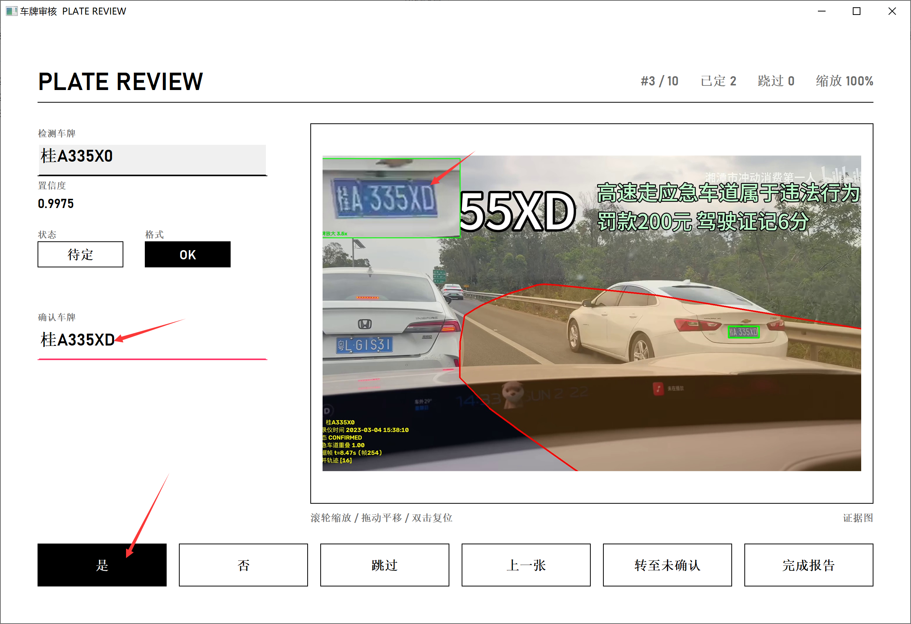
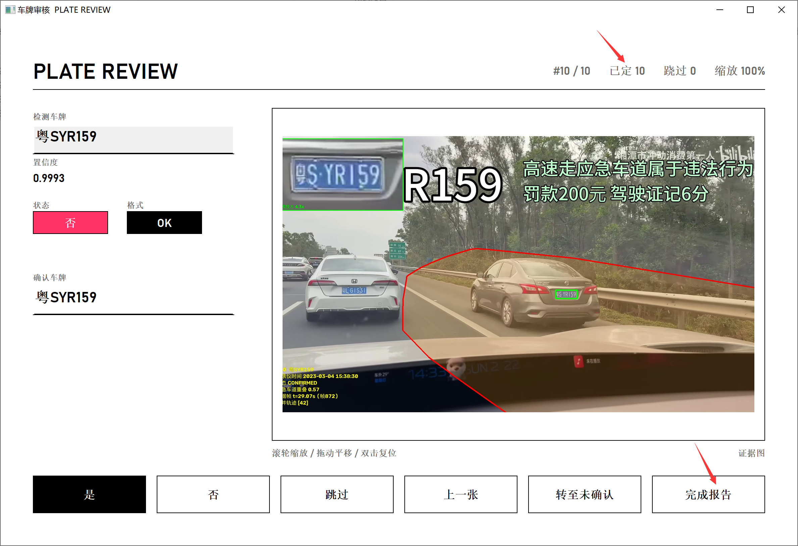
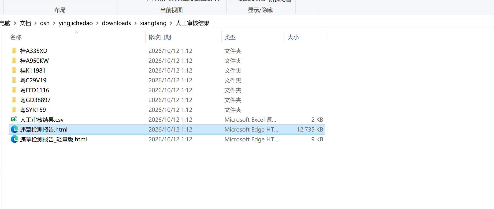
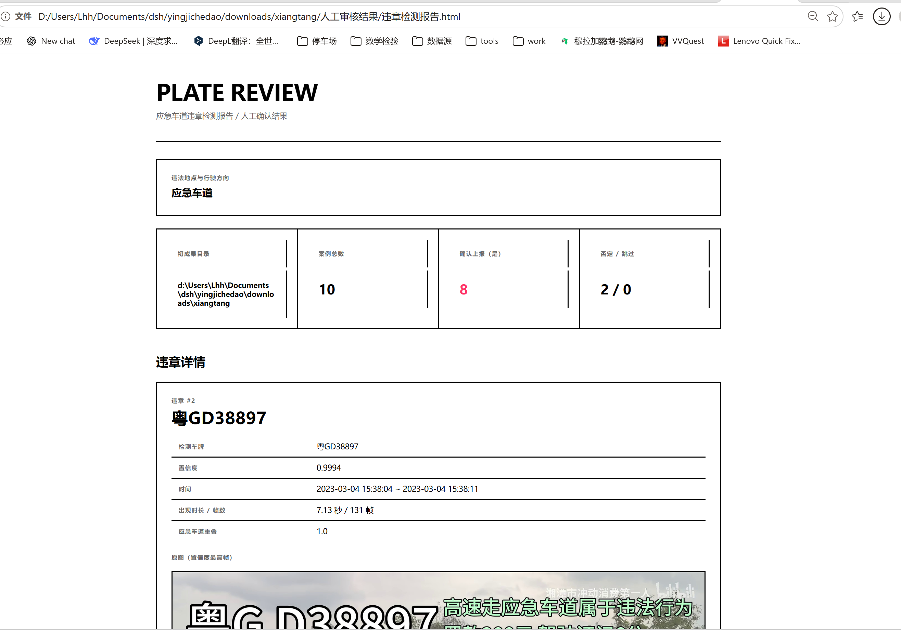

四个阶段：输入材料 → Python 检测流水线 → 人工复核 → 产出交付。下面这张即完整流程图。

操作步骤图示 ｜ 应急车道违章检测 + 人工复核 + 报告生成
PlateReview.exe 是用 C++（纯 Win32 + GDI+）
编译出来的，macOS / Linux 既不能运行也不能编译。Python 检测流水线理论上跨平台，
但整条链路（.bat、路径约定、复核界面）都按 Windows 设计。
_reuse\dist\PlateReview.exe），
换机器 clone 下来即可用，不需要装 Visual Studio。
| # | 项目 | 要求 |
|---|---|---|
| 1 | 视频源 | 行车记录仪视频路径。先查编码：若是 av1 必须先转 H.264，
否则流水线慢约 20 倍 |
| 2 | ROI 参考图片 | 在视频截图上用红色划出应急车道区域（画线或闭合区域均可）。 ROI 必须逐视频重新标定 |
| 3 | 初成果存放路径 | 不得包含中文——复核程序读不了中文路径 |
| 4 | 违法地点与行驶方向 | 生成报告前填写，一串文本，≤200 字 |
downloads\BV1CFRGBVEpo_00m24s-00m59s_h264.mp4，
ROI 参考图 downloads\image_50.png，初成果目录 downloads\xiangtang。
你自己的任务照此替换即可。
每次换视频前先清掉上次的中间产物，避免新旧混在一起：
del /q /s _reuse\run\* rem 中间产物（车检 jsonl、result.json） del /q _reuse\roi\* rem 旧 ROI（每个视频都要重标）
不清理也能跑，但结果目录会混着两次的产物，排查问题时容易看错。
bin\ffprobe.exe -v error -select_streams v:0 ^ -show_entries stream=codec_name -of csv=p=0 <你的视频> rem 若输出 av1，先转码（示例）： bin\ffmpeg.exe -y -i "downloads\BV1CFRGBVEpo_00m24s-00m59s.mp4" ^ -c:v libx264 -preset veryfast -crf 18 -c:a copy ^ "downloads\BV1CFRGBVEpo_00m24s-00m59s_h264.mp4"
实测：同一段内容、同为 1920×1080、同样采样 450 帧， H.264 约 23 秒，AV1 超过 962 秒还没跑完。
用 parse_roi.bat 或直接调脚本。它会输出 roi.json 和一张校验图：
_reuse\parse_roi.bat downloads\image_50.png ^ downloads\BV1CFRGBVEpo_00m24s-00m59s_h264.mp4 ^ _reuse\roi\roi_image50 polygon
务必打开 _reuse\roi\roi_image50\roi_verify.jpg 看一眼：
叠加的红线多边形要与你画的区域一致。若不一致，说明截图里的视频画面没被正确识别
（黑边/缩放），需要重标。
提示：解析结果可能出现「多边形有 N 个顶点落在画面外」的告警。 只要校验图里形状与你的标注一致，就是有意画到画面外，可以照用。
_reuse\run_pipeline.bat <H.264 视频> <roi.json> <初成果目录> ^ "<记录仪基准时间>" [分析秒数]
本页示例（30 秒整段）：
_reuse\run_pipeline.bat downloads\BV1CFRGBVEpo_00m24s-00m59s_h264.mp4 ^ _reuse\roi\roi_image50\roi.json downloads\xiangtang ^ "2023-03-04 15:38:02" 30
脚本会自动串起 4 个步骤，并在每一步打印进度：
| 步骤 | 做什么 |
|---|---|
| [0/4] | 编码检查（AV1 直接拦下） |
| [1/4] | 车辆检测（YOLO）→ 落 veh_*.jsonl |
| [2/4] | 两段式车牌识别（定位车牌 → 裁剪放大 → 识别） |
| [3/4] | 轨迹归并（把同一辆车的多条轨迹合并成一个案例） |
| [4/4] | 出初成果：CSV / JSON / 证据图 / 每案例的证据帧 |
调试链路时可以把最后的「分析秒数」给成 8，只跑前 8 秒，几十秒就能跑完，
链路完全一样。

图 2.1：在执行检测的终端里，可以看到分步进度、检出的轨迹与车牌、 以及最后的汇总（CONFIRMED / SUSPECT / UNREADABLE）。

图 2.2：初成果目录（downloads\xiangtang）里出现
证据图\、run_meta.json、检测结果.csv、
检测结果.json。这个目录就是下一步人工复核的输入。
| 产出 | 用途 |
|---|---|
检测结果.csv / .json |
车牌 + 起止时间 + 状态 + 材料清单（证据目录与三张帧的文件名） |
run_meta.json |
本次运行的参数、视频指纹、ROI 指纹——用于事后追溯与复现 |
证据图\01…NN_车牌_时间.jpg |
带 ROI 红框 + 车牌放大插图，供人工判断用（不进报告） |
证据图\案例NN_车牌\ |
该案例的证据帧：原图.jpg（置信最高帧）、
证据帧2.jpg（最早附近帧）、证据帧3.jpg（最晚附近帧） |
证据帧张数可能少于 3：可辨识帧不够时如实少给，不会拿同一帧凑数。

图 3.1：打开 _reuse\dist\PlateReview.exe，
在「初成果目录」框里粘贴上一步的成果目录
（本页示例：…\downloads\xiangtang），然后点「进入」。
注意：该路径不能包含中文，否则程序会拒绝并提示。

图 3.2：审核页。顶部显示 #3 / 10 已定 2 跳过 0；
左栏是检测车牌（只读）、置信度、状态、格式、确认车牌（可编辑）；
中间是该案例的证据图（带 ROI 红框与车牌放大插图，滚轮可像素级放大，拖动平移、双击复位）。
图中示例：检测车牌识别为 桂A335X0，人工看出末位应为 D，
于是把确认车牌改成 桂A335XD，再点「是」。
| 操作 | 含义 |
|---|---|
| 确认车牌 | 默认为检测值，可修改。格式要求：1 个汉字 + 6 或 7 位大写字母/数字。 输入自动转大写 |
| 是 | 确认该案例。格式不合规会拦截；确认后以此车牌为准，报告也用它 |
| 否 | 否认该结果，报告中不出现 |
| 跳过 | 暂不确认，之后可用「转至未确认」回来 |
| 上一张 | 回到上一个案例 |
| 转至未确认 | 跳到被标记「跳过」的案例；若没有则提示已全部确认 |
| 完成报告 | 所有案例都已选「是」或「否」才可执行 |
图片操作：滚轮缩放（100%–800%）、按住左键拖动平移、双击或右键复位。

图 3.3：顶部显示 #10 / 10 已定 10 跳过 0，说明每条都已判定
（「是」或「否」）。此时点右下角「完成报告」。
若还有未确认的案例，程序会提示「尚有未确认案例」，不会继续。
点「完成报告」后进入一个多行输入页：
n / 200本页示例填的是「应急车道」。该文本会以独立区块出现在报告开头。

图 4.1：初成果目录下新增 人工审核结果\，里面有
人工审核结果.csv（仅「是」的案例）、
每个确认车牌的文件夹（内含该案例的证据帧）、以及两份报告：
违章检测报告.html（自包含，约 12.7 MB）与
违章检测报告_轻量版.html（约 9 KB）。

图 4.2：在浏览器里打开报告。自上而下是—— 违法地点与行驶方向（你填的那段文本）； 概览四格（初成果目录、案例总数、确认上报数、否定/跳过数）； 违章详情（逐条：确认车牌、检测车牌、置信度、时间区间、出现时长/帧数、 应急车道重叠，以及三张证据帧）。
| 报告文件 | 特点 | 什么时候用 |
|---|---|---|
违章检测报告.html |
证据图 base64 内嵌，是单个可分发文件，不依赖外部图片 | 交给别人、归档。体积与案例数成正比 |
违章检测报告_轻量版.html |
图片走相对链接，只有几 KB | 本机反复打开看。不能单独拷走，否则全是破图 |
<初成果目录>\
├── 检测结果.csv / .json 检测产出：车牌 + 时间 + 状态 + 材料清单
├── run_meta.json 本次参数、视频与 ROI 指纹
├── 证据图\
│ ├── 01_车牌_时间.jpg 带 ROI 与放大插图（仅供人工审核）
│ └── 案例01_车牌\ 证据帧：原图.jpg / 证据帧2.jpg / 证据帧3.jpg
└── 人工审核结果\ （点「生成报告」后生成）
├── 人工审核结果.csv 仅「是」的案例 + 材料清单
├── 违章检测报告.html 自包含版（内嵌图，可分发）
├── 违章检测报告_轻量版.html 链接版（几 KB，本机看）
└── <车牌号>\ 该案例的证据帧
| 现象 | 原因与处理 |
|---|---|
| 流水线慢得离谱 | 视频是 AV1。先转 H.264（第一步 1-B） |
run_pipeline.bat 在 [0/4] 就失败 |
bin\ 里缺 ffprobe/ffmpeg。按 bin\README.md 的版本放回去 |
| 复核程序进不去目录 | 路径含中文。换一个不含中文的目录 |
| 报告里某案例只有 1 张证据图 | 该轨迹可辨识帧不足，如实少给（不会重复贴同一张） |
| 轻量版报告全是破图 | 它用相对链接，必须和 <车牌号>\ 文件夹放在一起看 |
| 报告里的时间不对 | 换视频后忘记改记录仪基准时间。检测时用 --base-ts "YYYY-MM-DD HH:MM:SS" 重给 |